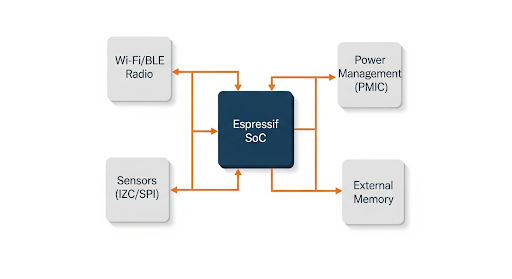

Smart Lighting & Matter Solution
Solution Overview
This reference design provides a comprehensive blueprint for developing smart lighting products (bulbs, switches, controllers) that are fully compliant with the new Matter standard. By leveraging Matter over Thread, this solution ensures seamless interoperability with major smart home ecosystems like Apple Home, Google Home, and Amazon Alexa. The design is optimized for reliability, low power consumption, and fast time-to-market.
Solution Block Diagram

Core Advantages
- Future-Proof Connectivity: Utilizes Wi-Fi 6, Bluetooth 5, and Thread via the ESP32-C6 for maximum compatibility.
- Seamless Interoperability: Built for the Matter standard, ensuring "it just works" across different smart home platforms.
- Low-Power Standby: Optimized firmware and hardware design for minimal power consumption when idle.
- Robust Security: Leverages Espressif's advanced security features like Secure Boot and Flash Encryption.
Recommended Bill of Materials (BOM)
The following core components are recommended for this solution. Click on a part number to view detailed specifications.
| Part Number | Description | Role in Solution |
|---|---|---|
| ESP32-C6-WROOM-1 | Wi-Fi 6 + BLE 5 + 802.15.4 Module | Main controller, handling Matter application logic and Thread/Wi-Fi communication. |
| ESP32-H2-MINI-1 | BLE 5 + 802.15.4 Module | Alternative low-power option for Thread-only end devices (e.g., battery-powered sensors). |
| (External IC) | PWM LED Driver IC | Controls the brightness and color temperature of the LEDs. |
Application Scenarios
This versatile solution can be adapted for a wide range of products, including:
- Dimmable and Tunable White Smart Bulbs (A19, BR30)
- RGBW LED Strips and Controllers
- Smart Wall Switches and Dimmers
- Connected Ceiling Fixtures